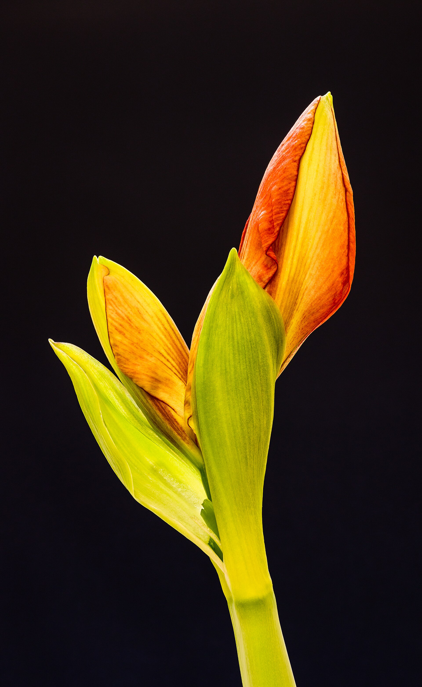

2026-02-18
It begins with one plant — a basil from the grocery store, a pothos from a coworker's desk pruning, a succulent bought on impulse because it looked indestructible. Within a year, the windowsill has a population. Within two, there is a watering schedule, a favorite nursery, and strong opinions about drainage. Keeping houseplants is the quietest popular hobby in the world: no outfit, no fees, no scoreboard. Just a person, a watering can, and a small green civilization that depends on them entirely and repays them in a currency that is hard to name and easy to feel.

Most self-improvement arrives with guilt attached, but a houseplant only ever asks for light and water, and it reports its results in public. A new leaf is a progress chart nobody argues with. Garden writers have understood this forever — the almanac tradition of seasonal advice collected at the Old Farmer's Almanac applies indoors as much as out: watch the plant, not the calendar, and it will tell you what it needs. The beginner's classic mistakes are all tenderness in the wrong direction — too much water, too much food, too much moving around. Plants are not pets. They are slow, patient chemistry sets that prefer to be left mostly alone, and learning to care for one is largely learning the discipline of doing a little, on time, and then waiting.
The hobby's turning point arrives the day a keeper learns to propagate. A pothos cutting roots in a jar of water on the sill; a spider plant sends out babies that can be potted up by the dozen; a single leaf of a succulent, laid on soil, manufactures an entire new plant out of patience and stored sunlight. From then on, the arithmetic of the windowsill changes forever: plants become gifts, trades, and inheritances. Offices run informal cutting exchanges. A plant that came from a grandmother's kitchen carries its provenance like a family story. There are plant people who have not bought a plant in a decade and whose homes are jungles anyway, because propagation turns one healthy plant into a small, endless supply — and because giving a rooted cutting away is one of the cheapest forms of generosity there is.
Ask keepers why they keep adding plants and the answers are suspiciously consistent: the room feels calmer, the air feels better, mornings feel softer. Health writers who cover indoor greenery, including the explainers at Healthline, tend to land in a sensible middle place — the famous air-purifying claims are real but modest at household scale, while the mood effects are the sturdy finding: caring for a living thing, watching it grow, and spending daily minutes in gentle attention are reliably good for the person doing them. The windowsill jungle is less a life-support system than a mindfulness practice with leaves. It asks for five unhurried minutes a day and pays them back with interest, in new growth.
Every serious keeper also maintains what might be called the intensive care shelf: the rescue plants. They arrive from clearance racks and office cleanouts and friends who swear they have killed a cactus, yellowed and leggy and priced at almost nothing, and the keeper takes them home the way other people take in stray cats. Some recover spectacularly, which is one of the hobby's purest satisfactions — there is no triumph quite like a clearance-rack orchid deciding, a year later, to bloom. Some decline despite everything, and even that teaches the curriculum: plants are living things, not appliances, and attention is not the same as control. The ICU shelf keeps the jungle honest. It is proof, in chlorophyll, that the hobby was never about decorating a room. It is about the recurring decision to care for something that cannot thank you in words, and to keep caring on the weeks when nothing visibly improves.
Stay with the hobby long enough and the plants become a timeline. The fern that survived three apartments. The cutting from a wedding bouquet, rooted against all advice and now older than the marriage's first car. The orchid that blooms every February like it has a calendar. People photograph their plants the way they photograph their children, and for the same reason: growth is the most hopeful thing in any house, and it is happening on the windowsill, quietly, all the time. Start with one plant — something forgiving, a pothos or a snake plant — and put it where the morning lands. Then wait. The jungle assembles itself, one leaf at a time, and one day a visitor will stand in your kitchen and say the word every keeper is secretly waiting to hear: lush.